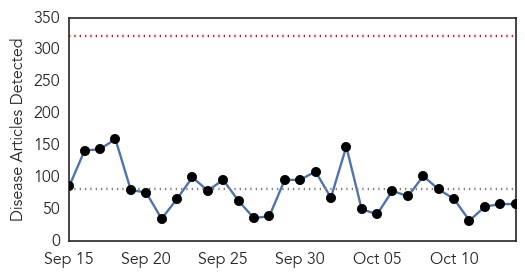
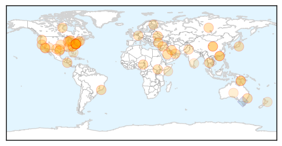
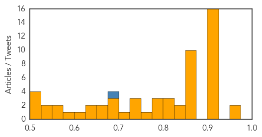
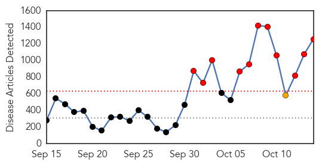
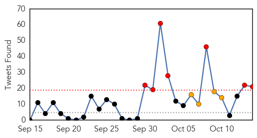
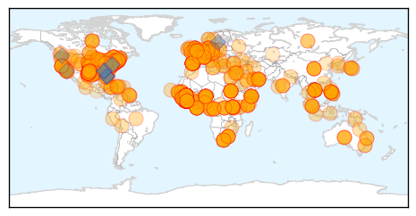

Unknown
30-Day Web Trend
0 alerts, 0 warnings

30-Day Twitter Trend
1 alerts, 0 warnings

Article Locations
Article Confidences
Top Articles:
- 0.972
- Flu season starting strong in Washington state - Local News
- 0.969
- Two-year-old girl dies of meningococcal in north Queensland
- 0.917
- Chicago Tribune
- 0.917
- Chicago Tribune
- 0.917
- Chicago Tribune
- 0.917
- Chicago Tribune
- 0.917
- Chicago Tribune
- 0.917
- Chicago Tribune
- 0.917
- Chicago Tribune
- 0.917
- Chicago Tribune
- 0.917
- Chicago Tribune
- 0.917
- Chicago Tribune
- 0.917
- Chicago Tribune
- 0.917
- Chicago Tribune
- 0.917
- Chicago Tribune
- 0.917
- Chicago Tribune
- 0.913
- Study shows a do-it-yourself flu vaccine works
- 0.907
- Identifying and Managing Potential Cases of Enterovirus D68 Infection
- 0.866
- Hong Kong police shown in video of alleged beating to be removed from positions
- 0.866
- Obama, Japan PM discussed Ebola, TPP by phone
- 0.866
- Tropical Storm Ana is seen in a NOAA satellite image
- 0.866
- Donovan, director of the White House's Office of Management and Budget,listens to a question at the Reuters Global Climate Change Summit in Washington
- 0.866
- U.S. Navy Rear Admiral White answers questions from reporters during the Reuters Global Climate Change Summit in Washington
- 0.866
- "No discrepancy" between U.S. and Turkey over Islamic State-Kerry
- 0.866
- A baby pig stands in a pen on a small farm outside of Calgary Alberta
- 0.866
- Rabinovitch, global director of Sustainability for global food manufacturer Mars, Inc, answers questions from reporters during the Reuters Global Climate Change Summit in Washington
- 0.866
- Ukraine parliament approves Poroshenko's choice for defence minister
- 0.866
- "Tsunami waves" possible after El Salvador quake, warning center says
- 0.844
- First Australian dies from drug resistant tuberculosis in Queensland
- 0.838
- Seven Salmonella Cases Confirmed After North Carolina Church Conference
- 0.825
- Human Papillomavirus Vaccines Offer Public Health Opportunity For Texas
- 0.814
- Kala-azar kills 150 people in South Sudan: UN
- 0.808
- Salmonellosis outbreak linked to North Carolina church conference
- 0.792
- Genes pinpoint cause of mystery fevers
- 0.784
- Madison County Health Department holding flu shot clinics this week
- 0.780
- EU Commission to cover 75% of costs for measures to combat African swine fever :: The Baltic Course
- 0.759
- Patient infections close operating rooms at Mission Hospital; accreditation in jeopardy
- 0.739
- Genetic Resistance to Rotavirus Reduces Vaccine Effect
- 0.736
- the edge of knowledge
- 0.730
- New Strategy for the Prevention and Control of African Swine Fever in China
- 0.719
- Scope disinfection failure suspected in superbug cluster, leads UPMC to alter methods
- 0.686
- Woman dies from drug resistant strain of tuberculosis in Cairns
- 0.680
- Some hospitals no longer testing for enterovirus-68
- 0.676
- Student's reported illness prompts Peoria school cleaning
- 0.670
- 6 Ways to Stay Healthy During Cold and Flu Season
- 0.668
- Portage's Haverhill Elementary sees more absences after report of enterovirus; health department says case does not look like the D-68 strain
- 0.643
- Clinton Township, MI Dentist, Dr. Michael Aiello Encourages Better Oral Health this Month by Educating People on a Minimally Invasive Laser Gum Disease Treatment
- 0.629
- Digging into potentially long-lasting impact of enterovirus
- 0.620
- Poop Pills May Offer A Better Way To Eradicate This Deadly Infection
- 0.587
- Stories tagged with "Somalia"
Showing top 50 articles...
Top Tweets:
- 0.869
- el hecho de que no conteste el mensaje de texto en un segundo no quiere decir que estoy pichando 😒 sencillamente estoy ocupada
- 0.688
- Trivia Tuesday: The most recent flu pandemic was the Hong Kong Flu in 1968-69, which registered as a Level 2 on the Pandemic Severity Index.
Ebola
30-Day Web Trend
11 alerts, 1 warnings

30-Day Twitter Trend
3 alerts, 8 warnings

Article Locations
Article Confidences
Top Articles:
- 1.000
- WFMJ.com News weather sports for Youngstown-Warren Ohio
- 1.000
- Concern over Ebola low here, still health care providers prep for the infection.
- 1.000
- The reassuring news in the Texas Ebola cases
- 1.000
- Dallas hospital learned its Ebola protocols while struggling to save mortally ill patient
- 1.000
- U.S. Isn't Done With Ebola
- 1.000
- Up to 10,000 new cases of Ebola per week expected in two months
- 1.000
- Ebola mortality rate now 70 per cent: WHO
- 1.000
- Doctor who beat virus gives transfusion for Ebola-infected Dallas nurse
- 1.000
- The Importation of Ebola
- 1.000
- WHO says 10,000 new Ebola cases likely by December
- 1.000
- WHO: 10,000 new Ebola cases per week could be seen
- 1.000
- UN Health Worker Dies of Ebola
- 1.000
- Doctor Who Beat Ebola Gives Blood for Infected Nurse
- 1.000
- Ebola Update
- 1.000
- Can dogs carry Ebola? Ill nurse's King Charles Spaniel moved to old air base
- 1.000
- Texas Nurse Upgraded To Good Condition
- 1.000
- #FactsNotFear
- 1.000
- Ebola death rate rises to 70 per cent, says WHO
- 1.000
- Ebola in Germany: UN worker who contracted virus in Liberia dies in Leipzig
- 1.000
- Ebola: Texas nurse Nina Pham's dog saved from being euthanised by officials
- 1.000
- Ebola outbreak: Nigeria is 'a week away' from beating virus
- 1.000
- Latest Updates U.S. House Speaker Says Obama Should Consider Travel Ban to Fight Ebola
- 1.000
- W. African Ebola Rate Underreported
- 1.000
- Ebola mortality: Would outbreaks be as deadly in US as in Africa?
- 1.000
- After nurse gets infected, US officials launch review of Ebola procedures
- 1.000
- 5 things to know about the Ebola virus
- 1.000
- News Guide: CDC admits missteps in Ebola fight
- 1.000
- Texas nurse who contracted Ebola repeatedly visited patient's room
- 1.000
- WHO says 10,000 new Ebola cases likely by December
- 1.000
- CDC to deploy Ebola response team to help hospitals
- 1.000
- Preparing Chicago for Ebola
- 1.000
- Ebola outbreak extremely unlikely
- 1.000
- WHO: 10,000 new Ebola cases per week could be seen
- 1.000
- Ebola infections could reach up to 10,000 a week, World Health Organisation warns
- 1.000
- Ebola infections could reach up to 10,000 a week, World Health Organisation warns
- 1.000
- ABC-7.com WZVN News for Fort Myers, Cape Coral & Naples, Florida
- 1.000
- WHO: 10,000 new Ebola cases per week could be seen
- 1.000
- CDC pledges better Ebola response; no answer yet how nurse got virus
- 1.000
- 10,000 new Ebola cases per week could be seen
- 1.000
- 10,000 New Ebola Cases Per Week Could Be Seen « CBS New York
- 1.000
- Ebola Update: Health Officials Taking Steps to Improve Hospital Safety
- 1.000
- UN health worker dies of Ebola in Germany
- 1.000
- Nigerian News from Leadership News
- 1.000
- CDC Monitoring 76 Hospital Workers in Dallas for Ebola Exposure
- 1.000
- Ebola Outbreak Hits New Areas in Sierra-Leone, Guinea, Liberia: WHO
- 1.000
- 8 Things You Need To Know About Ebola
- 1.000
- Ebola in America: Timeline of the Deadly Virus
- 1.000
- WHO warns 10,000 new Ebola cases per week could be seen
- 1.000
- WHO warns 10,000 new Ebola cases per week could be seen
- 1.000
- WHO warns 10,000 new Ebola cases per week could be seen
Showing top 50 articles...
Top Tweets:
- 0.976
- Studies show Ebola virus stays in bone marrow months after death. Corpses’ very contagious bc virus stays on skin.
- 0.964
- RT: Finally an "ice-bucket"like challenge 4 Ebola Kevin Bacon’s ShakeEbolaOff dance for Sierra Leone health fundraiser htt…
- 0.931
- Latest rapid risk assessment on Ebola virus disease in West Africa from, 6th update, 14 Oct http://t.co/ISS99gK75O
- 0.911
- RT: Join us tomorrow 1:00PM EST for Ebola webinar w/ Michael Osterholm and Myles Druckman as they discuss Ebola outbreak http://t.c…
- 0.896
- RT: "WHO: the Ebola outbreak "the most severe, acute health emergency seen in modern times". http://t.co/fiQwNuVCqP CrushEbo…
- 0.882
- CDC will establish an Ebola response team & put experts on ground w/in hrs. of any confirmed U.S. case to help protect workers from Ebola.
- 0.832
- On The Quarantine Period for Ebola Virus http://t.co/9jPhfMcI4d
- 0.814
- RT: @DrFriedenCDC CDC Ebola response teams would consider transferring ebola patients in future to one of high level conta…
- 0.778
- Highly unlikely to mutate. The Ebola virus is not spread through the air.
- 0.776
- CDC will host webinars & conf. calls w/hospitals, health depts. & associations to help prepare health workers to confidently diagnose Ebola
- 0.753
- 'I'm Doing Well,' Dallas Nurse With Ebola Says http://t.co/wSCO2eY5YO
- 0.746
- There are Ebola survivors! The mortality rate during this outbreak is 55-60%.
- 0.745
- RT: Everyone working in Emerg depts need to ask patients with fever, other Ebola-like symptoms: Where have you been? From …
- 0.743
- RT: Contacts of first Ebola patient in Dallas, Thomas Duncan, have passed through highest risk period of quarantine: CDC
- 0.742
- RT: .@CDCgov is recommending that the number of staff treating Ebola cases are reduced. Limits risk, give those doing it m…
- 0.715
- RT: We’re rolling out Ebola screening for passengers who’ve travelled from Sierra Leone, Guinea and Liberia http://t.co/cgfJrqtU1C
- 0.699
- 3 enhancements to prevent Ebola infection: site manager overseeing infection control, enhancing training & limiting staff providing care.
- 0.696
- .@CDCMMWR examines how NYC's taking preemptive steps to manage potential Ebola cases & prevent disease transmission. http://t.co/jU0YeEQus3
- 0.693
- U.N. medical officer dies of Ebola in German hospital http://t.co/xSwn0ctDHK
- 0.679
- C.D.C. Rethinking Methods to Stop Spread of Ebola http://t.co/CxNL0C4I8v
- 0.674
- RT: "The Ebola Outbreak, Fragile Health Systems, and Quality as a Cure" via & co-authored by DrPaulFarmer http://t.co/…
- 0.667
- RT: MMWR - Surveillance and Preparedness for Ebola Virus Disease — New York City, 2014 http://t.co/76sgsUUtK4
- 0.654
- Ebola: "The more I learn, the less I know." -Michael Osterholm EbolaForum
- 0.654
- Ebola Patient Dies in German Hospital http://t.co/aBc4ndKgUm
- 0.644
- Ebola survivor donates plasma to sick Dallas nurse http://t.co/Vc9OWJxiW5
- 0.639
- Health departments can improve readiness to rapidly respond to imported cases of Ebola. How NYC is getting prepared http://t.co/jU0YeEQus3
- 0.634
- RT: My paper just went live: @PLOSCurrentsOut: On The Quarantine Period for Ebola Virus http://t.co/LpSBjO6MkJ Does 21 d…
- 0.604
- About 70 hospital staffers cared for Ebola patient http://t.co/klBTMjm5ox
- 0.603
- Which is a bigger threat to the US, Ebola or flu? http://t.co/BkoAfebS12
- 0.592
- Ebola outbreak: Are health care workers prepared, protected? http://t.co/IGl0KMLxGS http://t.co/k0zjlEfOCa
- 0.571
- Comparison of current Ebola outbreak to SARS, MERS and Marburg outbreaks. @TIME http://t.co/GX1Nce7A1A http://t.co/yG3b2VLNTr
- 0.565
- WHO: New Ebola cases could reach 10,000 per week http://t.co/UkuyymGdyS TackleEbola
- 0.562
- RT: Why Ebola in early phases is different from Ebola in ICU & risk of transmission:My interview http://t.co/i5QqUAMwGS via…
- 0.552
- accepts ShakeEbolaOff Challenge for ! https://t.co/D7HvVqSF78 EndEbolaNow EmergencyUSA ebola
- 0.551
- RT: Kevin Bacon’s ShakeEbolaOff dance for Sierra Leone health fundraiser : The everything Sierra Leone news blog http://t.co/…
- 0.546
- Aerosol transmission of Ebola might be happening, but masked by the extent of contact transmission, sez M Osterholm. EbolaForum
- 0.530
- what the cdc is recommending to keep health care workers safe from ebola -- and does it work? http://t.co/qSWEdFoQhR
- 0.527
- The 48 original contacts of Ebola index patient have passed high risk period & remain symptom-free. We monitor for 21 days but are hopeful.
- 0.524
- Ebola cases are 1.5-2.5 times under-reported, WHO says, as it predicts dramatic rise in diagnoses http://t.co/y85vfTQ9Sa
- 0.518
- RT: Kevin Bacon’s ShakeEbolaOff dance for Sierra Leone health fundraiser http://t.co/Vmey7Ts52n
- 0.502
- RT: .@DrFriedenCDC Good news: all of Duncan’s 48 contacts have passed the highest risk phase with no Ebola symptoms. 1/2